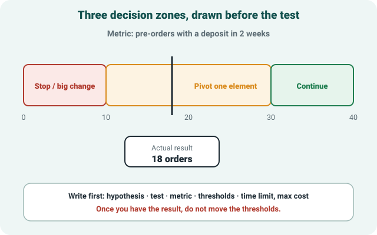

K3 · Problem solving and decision making › Level 4 Proficient
Run experiments with criteria and decide whether to pivot
This lesson completes Sheet 2: Experiment sheet. Print template. It uses the 3 hypotheses from Sheet 1. Deciding with incomplete information is covered in Decide with incomplete information (N4).
1. Objectives
- Design a cheap experiment with a metric, thresholds, a time limit and a maximum cost, written before it runs.
- Choose one of three paths: continue, pivot or stop, with a reason.
2. Retrieval warm-up
- What are the three hypotheses on Sheet 1?
- Why does "Would you buy it?" give unreliable answers?
Answers
- Customer; problem; willingness to pay.
- Because it asks about the future. People usually say yes to be polite. Ask about what they have done.
Review: Discover your customers.
3. Explanation
Interviews tell you whether the problem is real. Experiments tell you whether customers act: pre-order, pay, come back.
Step 1. Choose the riskiest hypothesis. It is the one that, if wrong, brings the whole idea down. Usually it is willingness to pay.
Step 2. Choose the cheapest way to test. For example: take pre-orders with a deposit; sell for one week at one location; do it by hand before building software.
Step 3. Write the criteria before you run it. This is the step most often skipped.
Sheet 2. Experiment sheet
- HypothesisA statement that could be false, from Sheet 1.
- TestThe cheapest action that shows whether customers act.
- MetricCount actions, not praise.
- ThresholdsAt what level you continue, pivot or stop.
- Time limit, maximum costWhen time or money runs out, decide.
Why write them first? Once you see the results, it is easy to persuade yourself that "nearly there is good enough". Thresholds written in advance keep you honest with yourself.

Step 4. Decide.
- Continue: the threshold is met. Move on to the next riskiest hypothesis.
- Pivot: change one element and keep the rest. The element could be the customer, the problem, the solution, the sales channel or the price.
- Stop: the result is very low, and no element is worth changing.
A pivot is not a failure. It uses what you learned to change exactly one thing.
4. Workplace example
Hypothetical scenario. Liam runs a small pottery workshop and wants to sell hand-painted custom tea sets to companies as holiday gifts.
The riskiest hypothesis: company admin teams will pay a premium price per set, ordering at least 20 sets.
He builds no website. He makes 3 samples, photographs them, and sends them to 40 admin teams he reaches through friends.
Experiment sheet, written in advance: the metric is the number of companies paying a 30% deposit. Time limit: 3 weeks. Maximum cost: a small marketing budget. 6 companies or more: continue. 2 to 5: pivot. Fewer than 2: stop.
Result: 3 companies pay a deposit. But 9 companies ask whether there is a set at about half the price.
The result is in the pivot zone. He keeps the customer and the sales channel and changes only the solution: add a line of mugs printed with a logo, at a lower price. He writes a new experiment sheet for this line.
Why this works: he tests cheaply before investing in a kiln and staff. The thresholds were written first, so he does not comfort himself that "3 companies is fine".
5. Practice
Hypothetical scenario. Mia wants to run weekend cooking classes for office workers, charging a mid-range fee per session.
Write a complete 5-box experiment sheet. Say what you will do if the result falls in the pivot zone.
Hint 1
A cheap test: open sign-ups with a deposit for one trial class, before renting a kitchen long term.
Hint 2
If you pivot, change one element. For example, the price, the time slot, or the customer group.
Model answer
- Hypothesis: office workers in the city centre will pay the full fee for a 3-hour class on Saturday morning.
- Test: post a trial class in 3 neighbourhood groups and company groups; take a deposit of about a third of the fee.
- Metric: number of people paying a deposit.
- Thresholds: 12 or more: continue. 5 to 11: pivot. Fewer than 5: stop this idea.
- Time limit, maximum cost: 2 weeks; a small budget for ads and printing.
- If pivot: keep the customer, change the solution to a 90-minute evening class at a lower fee, then test again.
(The details are hypothetical.)
6. Self-check
Choose an answer. Every option has an explanation.
Question 1. Which metric is best for testing a willingness-to-pay hypothesis?
-
Not quite. A like costs nothing. It does not show that customers will pay.
-
Correct. Correct. A deposit costs money and is close to a real purchase.
-
Not quite. A promise about the future is less reliable than an action that costs money.
Question 2. Your threshold to continue is 30 deposits. You get 27. You say "nearly there, let's continue". What is the problem?
-
Not quite. If you change the threshold after seeing the result, it no longer does its job.
-
Correct. Correct. Thresholds written in advance keep you honest. Act on the zone 27 falls in.
-
Not quite. Re-running until you get the number you want is fooling yourself, and it costs money.
Question 3. The result falls in the pivot zone. Which pivot fits the spirit of the lesson?
-
Not quite. Changing many things at once means you do not know what caused the new result.
-
Correct. Correct. A pivot changes one element, keeps the rest, then tests again.
-
Not quite. This is doing more of the same, not a pivot.
Question 4. What did the study by Camuffo and colleagues (2020) with 116 Italian start-ups find?
-
Not quite. The study did not find more early drop-out in this group.
-
Correct. Correct. This is the main result reported in the study's abstract.
-
Not quite. The study found differences in performance and in the number of pivots.
7. Reflection
- Have you ever kept going because you had "already put so much in"? Would thresholds written in advance have helped?
- Which element of your idea are you least willing to change? Why?
8. Real-world application
In the next 7 days, write Sheet 2 for your riskiest hypothesis. Ask someone else to read the thresholds before you run it. Start the experiment.
Level of evidence. Camuffo, Cordova, Gambardella and Spina (2020), Management Science 66(2): a randomised trial with 116 Italian start-ups, followed for about a year. Founders taught to form and test hypotheses like scientists performed better and pivoted more. They did not drop out more in the early stage. Camuffo and colleagues (2024), Strategic Management Journal 45(6), extend this line of research. The five steps of Sheet 2 and the three threshold zones are this site's proposed method, in the spirit of these studies.
9. Metadata
| skill | K3 · Problem solving and decision making |
|---|---|
| level | Level 4 · Proficient |
| group | N7 |
| framework_map | EntreComp: Coping with uncertainty, ambiguity and risk; Learning through experience; WEF: Analytical thinking; CSfW: 3b Make decisions; SkillsFuture CCS: Decision Making; NACE: Critical Thinking (reference only) |
| original | Vietnamese version |
| updated | 2026-11-14 |
Finish the lesson
Mark it as done and the site suggests reviews after 1, 3 and 7 days. The data stays on your device only.
Suggested reviews: